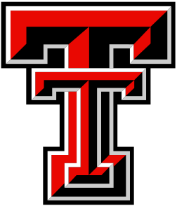
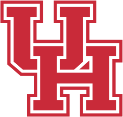
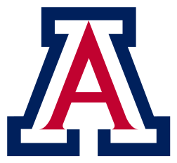

What if… rewrite any of the 118 games this season and watch the tiebreakers answer
Championship race what-if
Eliminated: BYU, Colorado, Baylor, TCU, Texas Tech, Kansas State, West Virginia, Kansas, Cincinnati, Houston, Arizona, UCF, Utah, Oklahoma State
The percentage is the chance of reaching the championship game, not of winning it or of finishing first. Two teams get there, so these add up to about 200%. Clinch/elimination statuses are proven across all 1 remaining outcomes with the full official tiebreaker procedure; scenario lines are for the upcoming week's games. Reflects real results until you pick a game; from then on it re-runs in your browser on the season your picks describe.
Conference standings · 72 of 72 games played what-if
| Team | Conf | Pct | Non-conf | Overall | |
|---|---|---|---|---|---|
| 1 | Arizona State1 | 7–2 | 0.778 | 3–0 | 11–2 |
| 2 | 7–2 | 0.778 | 3–0 | 10–3 | |
| 3 | 7–2 | 0.778 | 3–0 | 10–2 | |
| 4 | 7–2 | 0.778 | 2–1 | 9–3 | |
| 5 | Baylor2 | 6–3 | 0.667 | 2–1 | 8–4 |
| 6 | 6–3 | 0.667 | 2–1 | 8–4 | |
| 7 |  Texas Tech2 | 6–3 | 0.667 | 2–1 | 8–4 |
| 8 | Kansas State3 | 5–4 | 0.556 | 3–0 | 8–4 |
| 9 | 5–4 | 0.556 | 1–2 | 6–6 | |
| 10 | 4–5 | 0.444 | 1–2 | 5–7 | |
| 11 | 3–6 | 0.333 | 2–1 | 5–7 | |
| 12 |  Houston4 | 3–6 | 0.333 | 1–2 | 4–8 |
| 13 | UCF5 | 2–7 | 0.222 | 2–1 | 4–8 |
| 14 |  Arizona5 | 2–7 | 0.222 | 2–1 | 4–8 |
| 15 | 2–7 | 0.222 | 3–0 | 5–7 | |
| 16 | 0–9 | 0.000 | 3–0 | 3–9 |
1 How the four-way tie breaks — Arizona State, BYU, Colorado and Iowa State
- (a) Not all tied teams played each other and no team defeated all others — proceed to next step.
- (b) vs common opponents (Kansas, Kansas State, UCF, Utah): Arizona State 1.000, BYU 0.750, Colorado 0.500, Iowa State 0.750 — Arizona State seeded.
- Restarting procedure for remaining tied teams: BYU, Colorado, Iowa State.
- (a) Not all tied teams played each other and no team defeated all others — proceed to next step.
- (b) vs common opponents (Baylor, Kansas, Kansas State, UCF, Utah): BYU 0.800, Colorado 0.600, Iowa State 0.800 — still tied.
- (c) vs [Baylor/TCU/Texas Tech]: BYU 1-0, Colorado 2-0, Iowa State 1-1 — separates some but no single leader; continuing down the standings.
- (c) vs [Kansas State/West Virginia]: BYU 1-0, Colorado 0-1, Iowa State 2-0 — separates some but no single leader; continuing down the standings.
- (c) Walked full standings without a single leader — proceed.
- (d) Opponents' combined conference record: BYU 31-50 (0.383), Colorado 30-51 (0.370), Iowa State 36-45 (0.444) — Iowa State seeded.
- Restarting procedure for remaining tied teams: BYU, Colorado.
- (a) Head-to-head: BYU and Colorado did not play.
- (b) vs common opponents (Arizona, Baylor, Kansas, Kansas State, Oklahoma State, UCF, Utah): BYU 0.857, Colorado 0.714 — BYU seeded.
2 How the three-way tie breaks — Baylor, TCU and Texas Tech
- (a) Record among tied teams: Baylor 1.000, TCU 0.500, Texas Tech 0.000 — Baylor seeded.
- Restarting procedure for remaining tied teams: TCU, Texas Tech.
- (a) Head-to-head: TCU defeated Texas Tech.
3 How the two-way tie breaks — Kansas State and West Virginia
- (a) Head-to-head: Kansas State defeated West Virginia.
4 How the two-way tie breaks — Cincinnati and Houston
- (a) Head-to-head: Cincinnati defeated Houston.
5 How the three-way tie breaks — Arizona, UCF and Utah
- (a) Record among tied teams: Arizona 0.500, UCF 0.500, Utah 0.500 — no single leader.
- (b) vs common opponents (Arizona State, BYU, Colorado, TCU): Arizona 0.000, UCF 0.250, Utah 0.000 — UCF seeded.
- Restarting procedure for remaining tied teams: Arizona, Utah.
- (a) Head-to-head: Arizona defeated Utah.
The conference breaks ties only to name the two championship-game participants; positions below that stay tied in its official standings. This table sorts every tie for readability — see The Standings for both boards side by side.
Why is my team where they are? what-if
Follows your what-if picks when they're active. Full walkthrough of the procedure: The Rules.